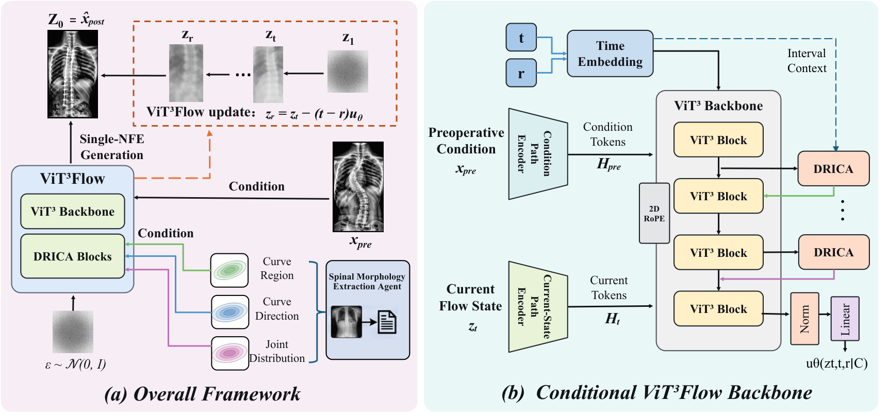
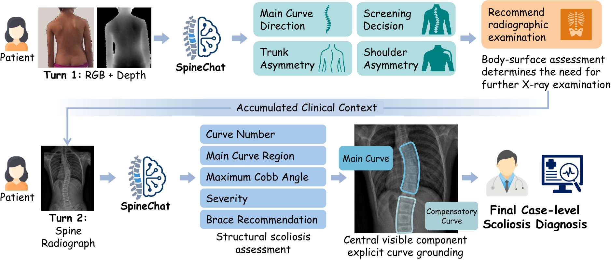

Assessment · Understanding · Synthesis
Intelligent Spine Family
AI research across the spine care pathway.
Exploring multimodal spinal deformity assessment and patient-specific postoperative radiograph synthesis.

Postoperative synthesis
ViT3Flow
From preoperative anatomy to postoperative radiographic appearance.
Explore project →
Multimodal assessment
SpineChat
Progressive clinical reasoning from body-surface screening to radiographic assessment.
Explore project →